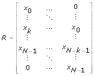
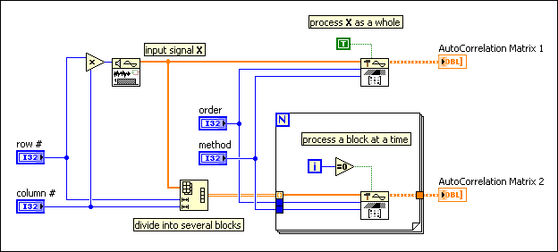

Computes the autocorrelation matrix of the input sequence X. Wire data to the X input to determine the polymorphic instance to use or manually select the instance.
initial? controls the initialization of the internal buffer. The default is FALSE. The first time this VI runs or if initial? is TRUE, LabVIEW initializes the internal buffer to empty. If initial? is FALSE, LabVIEW initializes the internal buffer to the final data points from the previous call to this instance. To process a large data sequence that consists of smaller blocks, set this input to TRUE for the first block and to FALSE for continuous processing of all remaining blocks.
X is the input sequence.
order specifies the order of the AutoCorrelation Matrix. If the order is smaller than zero, this VI returns an error. The default is 0.
method specifies the method used to compute the autocorrelation matrix.
0
AutoCorrelation (default)
1
Pre-Windowed
2
Post-Windowed
3
Covariance
4
Modified Covariance
AutoCorrelation Matrix returns the autocorrelation matrix of X of the size of (order+1) multiplied by (order+1).
error returns any error or warning from the VI. You can wire error to the Error Cluster From Error Code VI to convert the error code or warning into an error cluster.
initial? controls the initialization of the internal buffer. The default is FALSE. The first time this VI runs or if initial? is TRUE, LabVIEW initializes the internal buffer to empty. If initial? is FALSE, LabVIEW initializes the internal buffer to the final data points from the previous call to this instance. To process a large data sequence that consists of smaller blocks, set this input to TRUE for the first block and to FALSE for continuous processing of all remaining blocks.
X is the input sequence.
order specifies the order of the AutoCorrelation Matrix. If the order is smaller than zero, this VI returns an error. The default is 0.
method specifies the method used to compute the autocorrelation matrix.
0
AutoCorrelation (default)
1
Pre-Windowed
2
Post-Windowed
3
Covariance
4
Modified Covariance
AutoCorrelation Matrix returns the autocorrelation matrix of X of the size of (order+1) multiplied by (order+1).
error returns any error or warning from the VI. You can wire error to the Error Cluster From Error Code VI to convert the error code or warning into an error cluster.
This VI uses the following equation to calculate the autocorrelation matrix.
where M is AutoCorrelation Matrix, R is data matrix, s is normalization factor. RH is the conjugate transpose of matrix R.
If method is AutoCorrelation, R is a matrix of size (N+k)-by-(k+1) defined as follows.

where xi is the i-th element in X, N is the length of X , and k is the order. The normalization factor, s, is equal to N.
If method is Pre-Windowed, R is a matrix of size N-by-(k+1) defined as follows.
The normalization factor, s, is equal to N.
If method is Post-Windowed, R is a matrix of size N-by-(k+1) defined as follows.
The normalization factor, s, is equal to N.
If method is Covariance, R is a matrix of size (N-k)-by-(k+1) defined as follows.
The normalization factor, s, is equal to N-k.
If method is Modified Covariance, R is a matrix of size 2(N-k)-by-(k+1) defined as follows.
where xi* is the complex conjugate of xi. The normalization factor, s, is equal to 2*(N-k).
This VI supports both single shot and continuous mode. The following figure illustrates how to use the AutoCorrelation Matrix VI in single shot and continuous mode. The two outputs, AutoCorrelation Matrix 1 and AutoCorrelation Matrix 2, always produce the same results.

Autocorrelation matrix is widely used in the field of spectrum analysis to estimate the spectral components within the input signal. In general, Covariance and Modified Covariance methods give better results in spectral estimation processing than the AutoCorrelation, Pre-Windowed and Post-Windowed methods. National Instruments recommends that you use the Covariance or the Modified Covariance method to estimate the autocorrelation matrix when performing spectrum analysis.
 Add to the block diagram
Add to the block diagram Find on the palette
Find on the palette